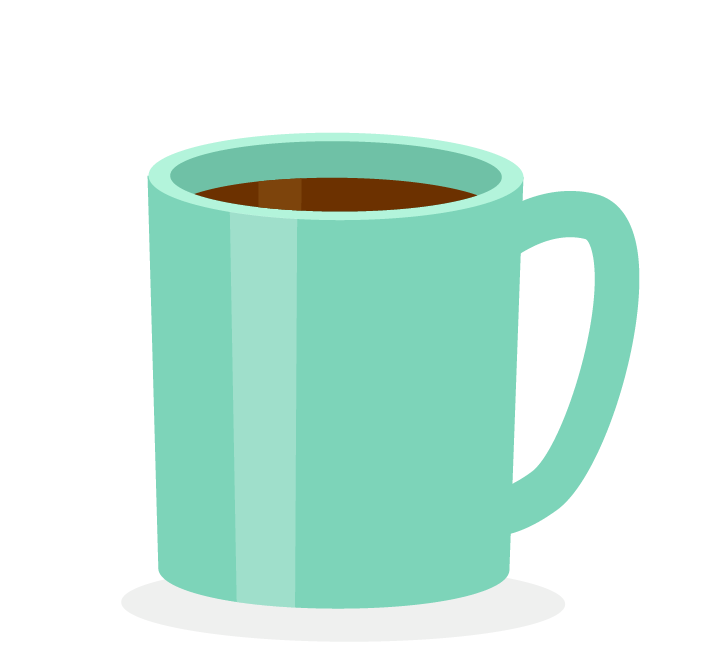
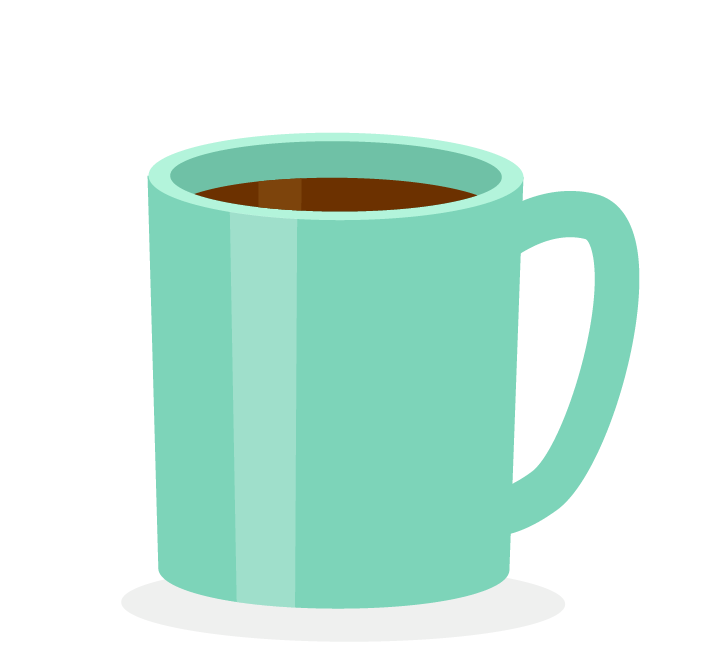

Bilan : les mois "bac à sable"
Comme expliqué dans Le sens du code et en introduction, l'objectif de ce blog est de tester des trucs techniques en html, css et js mais aussi de faire office de journal de bord. Après bientôt deux mois d'apprentissage, il est temps de jeter un oeil dans le rétro pour parler de mes grands débuts dans l'univers de la programmation : qu'est-ce que j'ai appris ? Qu'est-ce que j'en pense?
Il s'est écoulé 8 semaines tout pile depuis mon entrée à l'école, durant lesquelles ont été bouclés 4 sprints de deux semaines, alternant projets collectifs et 'branches arbres'.
La "théorie"
Deux sprints consacrés à des "branches arbres" ont donc été bouclés depuis le début de la formation, chaque sprint étant découpé en deux grande thématiques. Il est en réalité abusif de parler de théorie, car chaque thématique est constituée de ressources (écrites ou audiovisuelles), mais aussi d'exercices pratiques plus ou moins conséquents.

Durant ces sprints, j'ai donc successivement passé une semaine sur les
"systèmes et réseaux", puis sur les "langages de programmation". Après
une coupure bienvenue avec le projet collectif, nous avons tous
enchainé avec le deuxieme sprint consacré dans un premier temps aux
"paradigmes de programmation", puis aux "structres d'exécution".
Il ne sert pas à grand chose, ni pour moi ni pour vous, de détailler à
grands renforts de concepts la totalité de ce qui a été emmagasiné. Je
préfère vous faire un pot-pourri de mes chouchous de ces 4 semaines de
"théorie" et le top 6 des choses que j'ai retenues :
- La différence entre l'IPv4 et l'IPv6 et comment gérer le fait que l'on sera de plus en plus nombreux à être connectés. De manière générale, j'ai kiffé la branche sur les protocoles réseaux : comprendre les communications entre serveurs, les implications sécuritaires, etc. m'a vraiment passionnée (un intérêt que j'ai retrouvé lors du dernier meet-up Paris.JS avec un talk super intéressant sur les headers de sécurité que je me suis amusée à décortiquer sur mes projets par la suite).
- Découvrir l'obfuscation - définitivement mon terme préféré toutes catégories confondues - et les enjeux de protéger son code versus la vision d'un numérique libre, transparent et en open access.
- Comprendre comment une ligne de code se transforme en une impulsion électrique et inversement comment mon ordinateur fait pour me retourner les applications sur lesquelles je travaillais avant que je ne le mette en veille (grosse découverte aussi sur la gestion de la RAM par Apple dans ses mises en veille).
- true+true =2. De manière générale, toute la logique de JS, parfois délicieusement absurde.
- Comprendre que toute la logique de notre monde numérique pour régler un problème - et donc une bonne partie des structures de nos dispositifs - repose sur trois possibilités : introduire une condition, recommencer depuis le début, passer à l'étape suivante.
- Javascript et moi, on est pareils : monothread et asynchrones : une chose apres l'autre, mais avec la possibilité d'en mettre quelques-unes de côté de temps en temps pour les traiter plus tard.
La "pratique"
Beaucoup de pratique dans les sprints : sous forme de mini exercices illustrant les concepts vus en théorie, d'exercices plus longs en vue d'appliquer concrétement les concepts, ou d'exercices individuels plus conséquents. Plusieurs de ces exercices m'ont particulièrement marquée, et sur le podium on retrouve :
La récursivité : abordée violemment au détour d'un exercice sur codewars, puis rencontrée à nouveau dans différents petits exercices pour au final la traiter complètement dans un exercice individuel complet, la récursivité me parle car j'ai l'impression de toucher au véritable intérêt de faire du code (tout faire tourner en boucle de manière automatique la plus simple possible). La sasisfaction intense de réussir des fonctions récursives alors qu'il y a deux mois je ne savais pas ce qu'était une fonction est un sentiment réconfortant auquel je reviens quand je me sens découragée devant le chemin encore à parcourir.

Pimp my ride : long, fastidieux, mal expliqué, cet exercice m'a traumatisée mais j'y reviens toujours quand j'ai un doute sur une méthode de manipulation d'objets. Comme quoi...

Debugger : en dehors des exercices en eux-mêmes, un des plus gros apprentissage pratique de ces deux derniers mois me semble la capacité à traiter les problèmes et à savoir quel(s) outil(s) mobiliser quand ça ne fonctionne pas. Et ça m'est bien utile, parce que pour l'instant, pas grand-chose ne fonctionne. A moi les console.log, les copier-coller d'erreurs sur google, les grands fous de Stack OverFlow et la doc mdn.
Quelques réalisations
En dehors des petits exercices, l'apprentissage est surtout rythmé par des projets collectifs sur des sprints de 2 semaines, qui donnent naissance à des réalisations concrètes vraiment satisfaisantes. Ainsi, le premier projet consistant à coder en Lua un jeu rétro sur Pico-8 a permis d'avoir des jeux complètement jouables et publiés (par exemple celui-ci, celui-ci ou celui-ci).
Le dernier projet nous a permis à mon groupe et moi de créer un site indiquant les astéroïdes les plus proches de la terre à une date donnée grâce à l'API de la NASA. Le projet m'a plongée directement dans les fetch et les erreurs 400, mais j'ai trouvé enthousiasmant de réaliser un projet de A à Z, en équipe. Les apprentissages des projets collectifs sont ainsi tout autant techniques qu'humains, car chaque projet est exécuté avec une team différente, ce qui demande de s'adapter aux facons de travailler, mais m'en dit aussi toujours plus sur les modalités qui me conviennent et surtout sur celles qui ne me conviennent pas du tout.

Comme pour les aspects pratiques, il ne me semble pas intéressant de lister tous les projets collectifs. Je ferai une liste chronologique lorsque suffisamment de projets pourront eêtre présentés et qu'il sera possible d'en tirer davantage de conclusions, notamment en retraçant l'évolution. Les projets dont je suis la plus fière sont facilement identifiables : ce sont ceux que vous pourrez retrouver sous l'onglet projet de ce site
Conclusion
Alors quel bilan ? Dans l'ensemble, majoritairement positif : du côté humain, intégrer une cohorte de personnes motivées par le même objectif, mais avec des parcours et des envies différents est extrêmement inspirant ; cela permet aussi de tester un panel très large de formes de communication et de collaboration (travailler avec des gens qui n'ont pas du tout la même formation et/ou les mêmes objectifs). Du côté métier, l'apprentissage est intense et génère forcément de la fatigue ; il faut évidemment une grande concentration et organisation pour mener à bien une reconversion de ce type, dans ces délais (et je pense que ça pourra faire l'objet d'un article séparé si ça vous intéresse). Mais les hard-skills sont variés et me passionnent réellement. Malgré les angoisses qui peuvent poindre ("serai-je assez compétente ?", "Le marché de l'emploi dans ce secteur sera-t-il toujours apte à m'accueillir?", "Vais-je trouver une boîte qui matche mes valeurs?"), ça me semble être la clé de mon apprentissage de mon côté : le plaisir continu à coder.